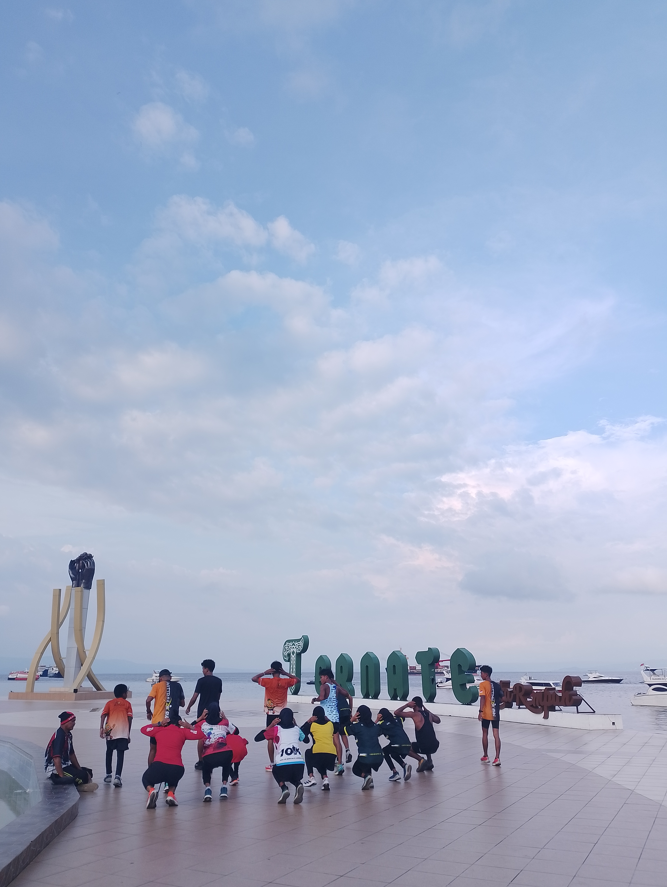
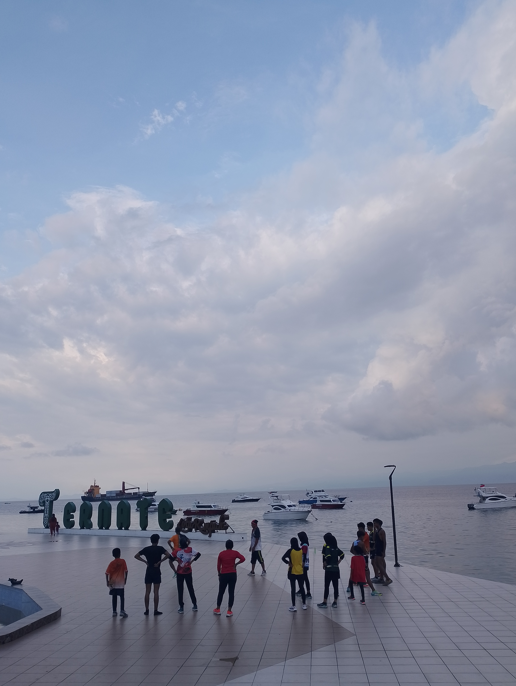
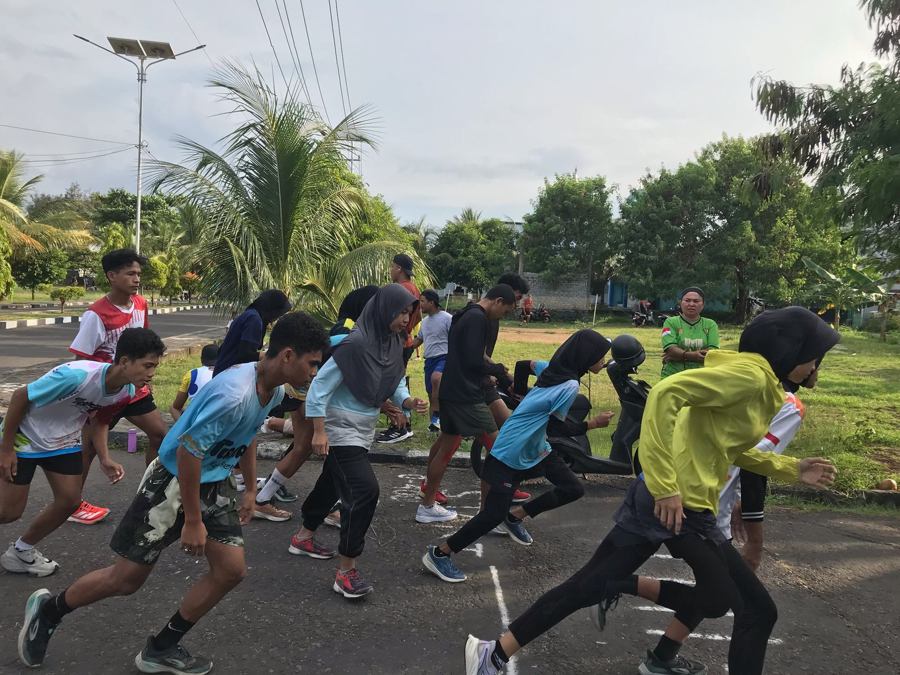
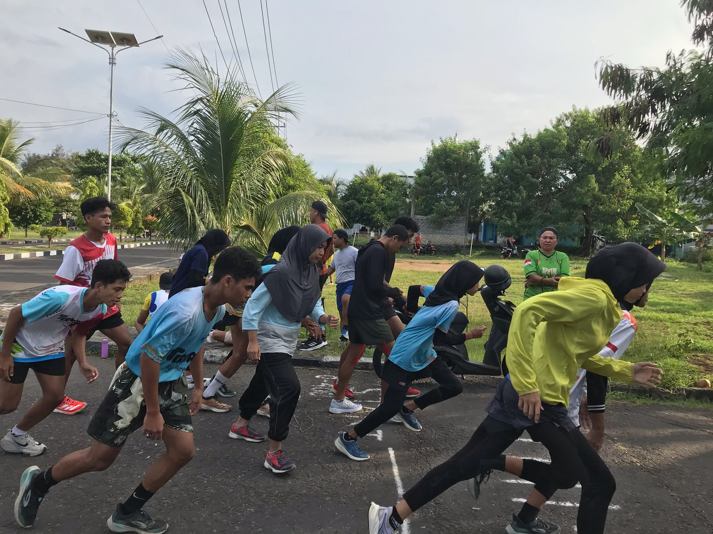
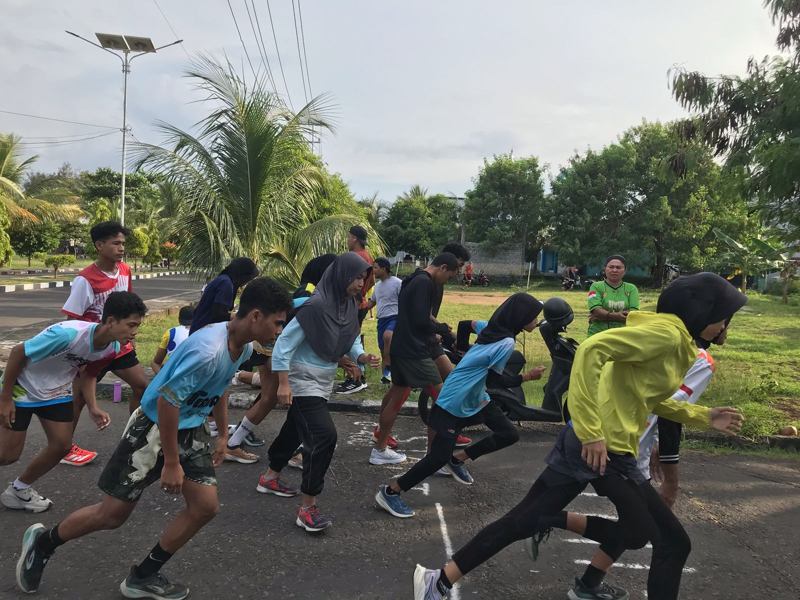

Prestasi Atlet
| Kejuaraan | Tingkat | Tahun | Prestasi |
|---|---|---|---|
| ADHYAKSA RUN | Kabupaten/Kota | 2025 | Juara 1 Lari 10K |
| PATTIMURA RUN | Kabupaten/Kota | 2025 | Juara 1 Lari 10K |
| Lomba Lari 7K HUT AL | Kabupaten/Kota | 2022 | Juara 1 Lari 7K |
| PORPROV IV Maluku Utara | Provinsi | 2022 | Juara 2 Lari 5000 m, Juara 3 Lari 1500 m |
| Lomba Lari 10 Km Hut Provinsi | Kabupaten/Kota | 2019 | Juara 1 Lari 10K |
| PORPROV III Maluku Utara | Provinsi | 2019 | Juara 2 Lari 5000m, Juara 2 Lari 1500m |
| Kejurnas Atletik Senior | Nasional | 2019 | Podium 12 Lari 5000m dengan waktu 15.51'77" |
| HUT POLRES HALSEL | Kabupaten/Kota | 2019 | Juara 1 Lari 10K |
| Jakarta International MarathonL | Nasional | Podium 8 | |
| HUT Kota Ternate | Kabupaten/Kota | 2017 | Juara 1 Lari 10K |
| PORPROV II Maluku Utara | Provinsi | 2017 | Juara 1 Lari 10000m, Juara 2 Lari 5000m |
| HUT Kota Ternate | Kabupaten/Kota | 2015 | Juara 1 Lari 10K |
| HUT Kota Ternate | Kabupaten/Kota | 2015 | Juara 1 Lari 10K |
| Cross Country HUT AL | Kabupaten/Kota | 2015 | Juara 1 Lari 10K |
| HUT Kota Weda | Kabupaten/Kota | 2015 | Juara 1 Lari 10K |
| HUT Provinsi | Kabupaten/Kota | 2015 | Juara 1 Lari 10K |
| Kejuaraan | Tingkat | Tahun | Prestasi |
|---|---|---|---|
| ADHYAKSA MALUT FUN RUN | Provinsi | 2025 | Juara 3 Lari 10K |
| IKA UNKHAIR FUN RUN | Daerah | 2024 | Juara 3 Lari 10K |
| FESTIVAL OLAHRAGA KONI | Kota | 2025 | Juara 2 Lari 800m |
| PORPROV II Maluku Utara | Provinsi | 2017 | Juara 3 Lari 800m, Juara 3 Lari 400m |
| Kejurda | Kabupaten/Kota | 2007 | Juara 3 Lari 1500m |
| Kejurda | Kabupaten/Kota | 2005 | Juara 1 Lari 400m, Juara 2 Lari 800m |
| Kejuaraan | Tingkat | Tahun | Prestasi |
|---|---|---|---|
| Festival Olahraga KONI | Kota | 2025 | Juara 1 Lompat Jauh, Juara 2 Lari 200m, Juara 2 Estafet 4x100m |
| POMNAS UNKHAIR | Kota | 2024 | Juara 1 Lari 100m |
| PORPROV IV Maluku Utara | Provinsi | 2022 | Juara 1 Lari 400m, Juara 1 Lari Estafet 4x100m |
| POPDA X Maluku Utara | Provinsi | 2022 | Juara 2 Lompat Jauh |
| PORPROV III Maluku Utara | Provinsi | 2019 | Juara 3 Estafet 4x100m |
| O2SN | Nasional | 2019 | Peserta |
| O2SN | Provinsi | 2019 | Juara 1 Lari 60m, Juara 1 Lompat Jauh, Juara 1 Tolak Peluru |
| O2SN | Provinsi | 2018 | Juara 2 Lari 60m, Juara 2 Lompat Jauh, Juara 2 Tolak Peluru |
| PORPROV II Maluku Utara | Provinsi | 2017 | Juara 3 Lari 5000m |
| GALA DESA | Kabupaten/Kota | 2017 | Juara 1 Lari 50m |
| POPDA VII Maluku Utara | Provinsi | 2016 | Peserta |
| Kejurda | Provinsi | 2016 | Juara 2 Lompat Jauh, Juara 1 Lari 200m |
| Kejuaraan | Tingkat | Tahun | Prestasi |
|---|---|---|---|
| Festival Olahraga KONI | Kota | 2025 | Juara 1 Lari 100m, Juara 1 Lari 200m, Juara 2 Lari Estafet 4x100m |
| PORPROV III MALUT | PROVINSI | 2019 | Peserta |
| Lomba Lari 5K | Daerah | 2019 | Juara 6 Lari 5K |
| POPDA Maluku Utara | Provinsi | 2022 | Juara 2 Lari 4x400m |
| PORPROV Maluku Utara | Provinsi | 2022 | Juara 3 Lari 5000m |
| Festival Olahraga Pendidikan | Daerah | 2022 | Juara 1 Lari 80m |
| DBON | Daerah | 2022 | Juara 1 Lari 100m |
| Kejuaraan | Tingkat | Tahun | Prestasi |
|---|---|---|---|
| IKA Fakultas Hukum Unkhair 2024 | Daerah | 2024 | Juara 3 Lari 10K |
| Festival Olahraga KONI 2025 | Kota | 2025 | Juara 2 400m, Juara 1 800m, Juara 1 5K |
| Pattimura Run | Daerah | 2025 | Juara 1 10K |
| Bhayangkara Run | Daerah | 2025 | Juara 1 10K |
Pelatih Kami

Coach Rusli Yusup
Pelatih Kepala

Coach Cao Ahe
Asisten Pelatih

Coach Sukarmin Yaba, S.Pd
Asisten Pelatih
Galeri Kegiatan



 




×

Kontak Kami
📧 Email: atletikgamalama@gmail.com
📱 Instagram: @gamalamaatletik